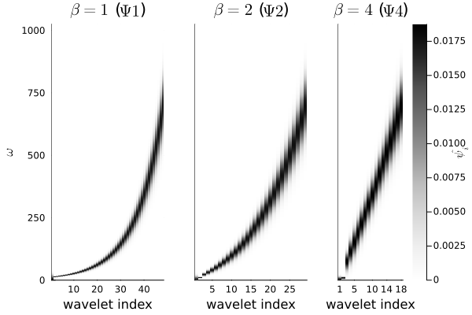

Wavelet Frequency spacing
Frequently, using a fixed ratio for scaling the wavelets results in too many large scale wavelets. There are several ways of dealing with this; in this package, the scaling factors have the form $2^{a(mx+x_0)^{^1/_\beta}}$, for suitable choice of $a$,$m$, $x_0$, and $\beta$. The figure gives an example of the chosen scaling factors in log frequency.

If $\beta$ is 1, then we have a linear relation between the index and the log-frequency, and $Q$ gives exactly the number of wavelets per octave throughout. As $\beta$ increases, the wavelets skew more and more heavily to high frequencies. The default value is 4.
The user chooses $\beta$, $Q$ (the number of wavelets per octave at the last point), and Ave. Length (the number of octaves covered by the averaging function), and then $a$, $m$, $x_0$, and the total number of wavelets $N_w$ are chosen so that:
- The first wavelet is scaled by $2^{\textrm{Ave. Length}}$, so the curve $a(mx+x_0)^{^1/_\beta}$ goes through the point $(x,y)=(1,\textrm{Ave. Length})$.
- The derivative $\frac{\mathrm{d}y}{\mathrm{d}x}$ at the last point is $\frac{1}{Q}$, so the "instantaneous" number of wavelets $x$ per octave $y$ is $Q$. Each type of wavelet has a maximum scaling $2^{N_{Octaves}}$ returned by
getNOctaves(generally half the signal length), so the final point $N_w$ satisfies both $y(N_w) = N_{Octaves}$ and $y'(N_w)=^1/_Q$. - Finally, the spacing is chosen so that there are exactly $Q$ wavelets in the last octave.
If you are interested in the exact computation, see the function polySpacing. As some examples of how the wavelet bank changes as we change $\beta$:
n=2047
Ψ1 = wavelet(morl, s=8, β=1)
d1, ξ = computeWavelets(n,Ψ1)
Ψ2 = wavelet(morl, s=8, β =2)
d2, ξ = Wavelets.computeWavelets(n,Ψ2)
Ψ4 = wavelet(morl, s=8, β =4)
d4, ξ = Wavelets.computeWavelets(n,Ψ4)
matchingLimits = (minimum([d1 d2 d4]), maximum([d1 d2 d4]))# for
plot(heatmap(1:size(d1,2), ξ, d1, color=:Greys,
yaxis = (L"\omega", ),
xaxis = ("wavelet index", ),
title=L"\beta=1"*" ("*L"\Psi1"*")", colorbar=false,
clims=matchingLimits),
heatmap(1:size(d2,2), ξ, d2, color=:Greys,
yticks=[],
xaxis = ("wavelet index", ),
title=L"\beta=2"*" ("*L"\Psi2"*")", colorbar=false,
clims=matchingLimits),
heatmap(1:size(d4,2), ξ, d4,color=:Greys, yticks=[],
xaxis = ("wavelet index", ),
title=L"\beta=4"*" ("*L"\Psi4"*")"),
layout=(1,3), clims=matchingLimits,┌ Warning: the lowest frequency wavelet has more than 1% its max at zero, so it may not be analytic. Think carefully │ lowAprxAnalyt = 0.013623009623004651 └ @ ContinuousWavelets ~/build/dsweber2/ContinuousWavelets.jl/src/sanityChecks.jl:6 GKS: Rectangle definition is invalid in routine SET_VIEWPORT GKS: Rectangle definition is invalid in routine SET_VIEWPORT GKS: Rectangle definition is invalid in routine SET_VIEWPORT GKS: Rectangle definition is invalid in routine SET_VIEWPORT GKS: Rectangle definition is invalid in routine SET_VIEWPORT GKS: Rectangle definition is invalid in routine SET_VIEWPORT GKS: Rectangle definition is invalid in routine SET_VIEWPORT

note that the low-frequency coverage increases drastically as we decrease $\beta$.